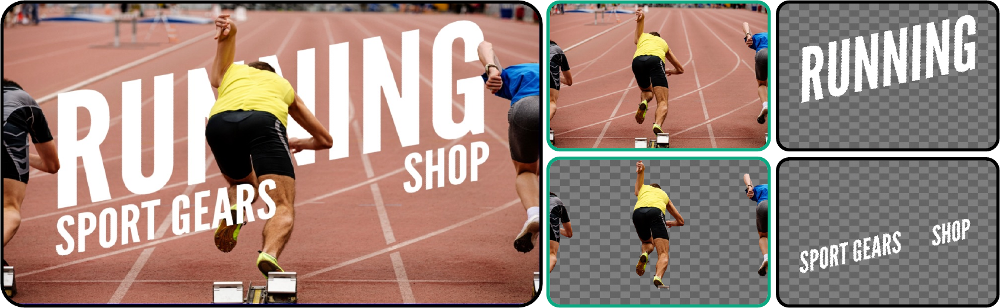
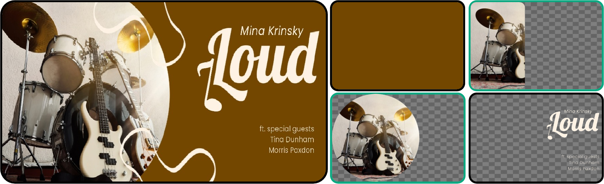
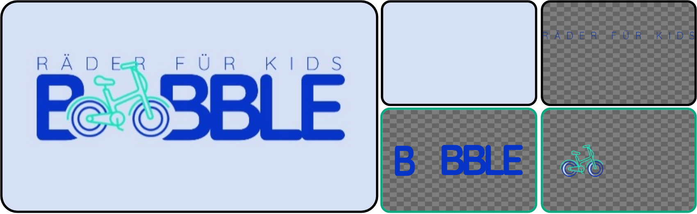
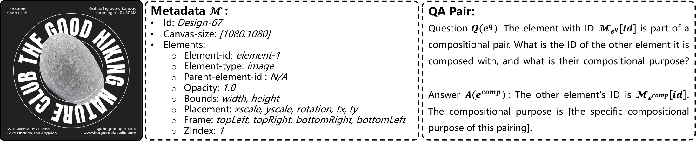
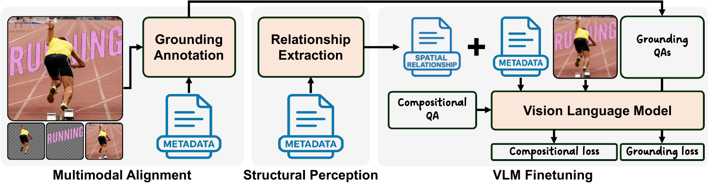
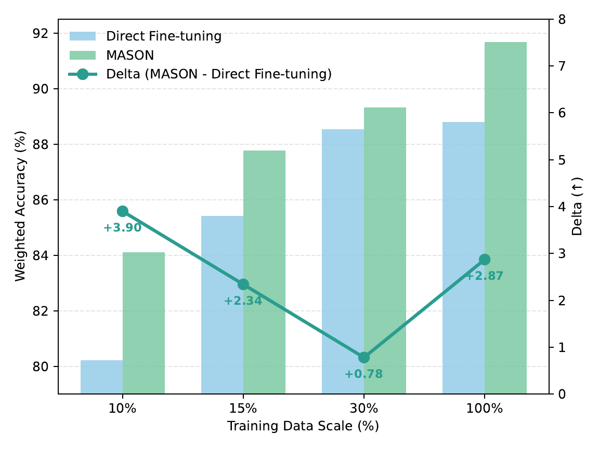
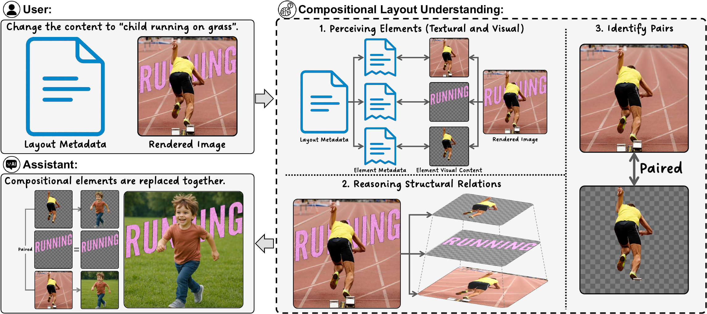

Clipping
Cutout layers allow new elements to be inserted between a base image and a separated foreground.
Overview
Layout understanding is central to document analysis, UI creation, and graphic design. Existing vision-language models handle many atomic layouts, but compositional designs require reasoning about visually entangled elements and hierarchical layer structure.
This project introduces compositional layout understanding, presents CoDeLayout, and evaluates MASON, a post-training paradigm that combines multimodal alignment with structural perception.
Composition Types

Cutout layers allow new elements to be inserted between a base image and a separated foreground.

Image crops are integrated into stylized shapes to create coherent visual composition.
Elements are paired with outlines or shadows to emphasize visual hierarchy.

Text and graphics are transformed together to create expressive visual effects.
CoDeLayout

Each CoDeLayout instance contains a high-fidelity rendered design image, structured element-level metadata, and QA-style annotations specifying compositional element pairs and their design intent.
The dataset follows real-world graphic design distributions across overlaying, clipping, blending, and morphing, with manually verified test samples for reliable evaluation.
MASON

MA grounds metadata-defined elements to their visual counterparts, reducing semantic drift under visual entanglement.
SP augments metadata with layer-aware spatial relationships, improving reasoning about hierarchy and inter-element dependencies.
Results
| Model | Overlaying | Clipping | Blending | Morphing | Weighted | Average |
|---|---|---|---|---|---|---|
| GPT-o3 | 93.91 | 63.64 | 79.49 | 68.09 | 79.68 | 76.28 |
| Direct Finetune | 93.04 | 83.33 | 94.87 | 65.96 | 88.80 | 84.30 |
| MASON, 30% data | 92.17 | 86.36 | 93.59 | 72.34 | 89.32 | 86.12 |
| MASON, full data | 95.65 | 90.91 | 95.51 | 70.21 | 91.66 | 88.07 |

Application

Release
Citation
@inproceedings{huang2026beyond,
title = {Beyond Atomic Layouts: Compositional Design Understanding with Vision-Language Models},
author = {Huang, Yiyang and Wang, Zhaowen and Jenni, Simon and Shi, Jing and Zhang, Yitian and Wang, Yizhou and Fu, Yun},
booktitle = {European Conference on Computer Vision (ECCV)},
year = {2026}
}